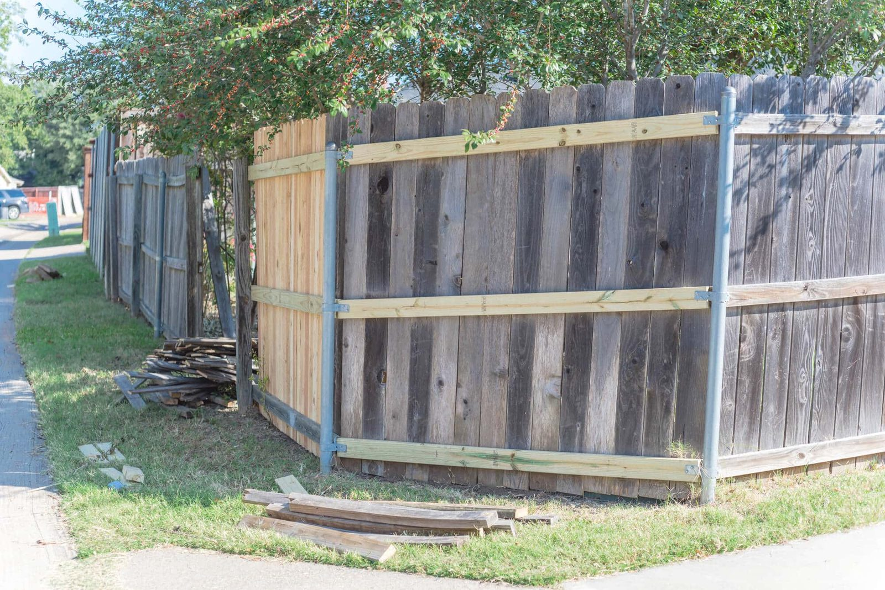
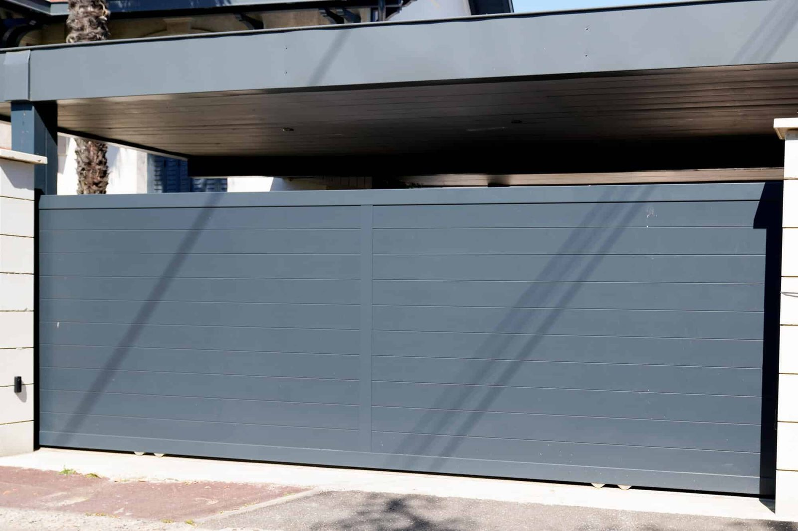

In This Guide
- Wood usually costs less up front and gives full privacy. Aluminum costs more at the start and asks for far less upkeep.
- In Louisiana humidity, wood faces rot, warping, and termites, while aluminum has no wood to feed on and relies on its coating.
- Standard aluminum pickets are see-through, so privacy needs a slat or panel style, and wood remains the easiest route to a solid screen.
- Neither material wins every time. Budget, privacy needs, and how much upkeep you want decide the right pick.
Wood and aluminum sit at opposite ends of the fence spectrum. Wood offers warmth and full privacy at a lower starting price. Aluminum offers a clean finish and very little upkeep. The right one depends on what you want the fence to do and how much time you want to spend on it.
Big Easy Fence installs both, so here is a plain side-by-side look at aluminum fencing and wood fences across the factors that decide most purchases.
Aluminum and Wood at a Glance
Start with the short version. Each row is covered in more detail below.
| Factor | Aluminum | Wood |
|---|---|---|
| Upfront Cost | Usually higher | Usually lower |
| Upkeep | Washing and occasional touch-ups | Sealing or staining every few years, plus repairs |
| Louisiana Weather | Coating resists humidity and rain, and there is nothing to rot | Prone to rot, warping, and termites |
| Privacy | Open pickets, or slat and panel styles for a screen | Solid boards for full privacy |
| Look | Sleek, modern, or ornamental | Warm, natural, and rustic |
| Installation | Lightweight, prefabricated panels | Heavier, with more material and labor |
Cost Over Time
The price tag on the estimate and the price of owning the fence for twenty years are two different numbers.
Upfront Price
Wood is usually the cheaper fence to install. Lumber is widely available and the material list is simpler, so the first invoice tends to be smaller. Aluminum typically costs more at the start, though pricing varies a lot with style, height, and gates.
Long-Term Spend
Wood keeps asking for money after installation. Sealer, stain, board replacement, and post repairs add up, and in a wet climate they arrive sooner. Aluminum asks for a wash and an occasional touch-up. Add up the whole life of the fence and the gap narrows, and for some owners it flips.
Maintenance and Durability in Louisiana
Wood
A wood fence needs sealant every few years, and once it weathers or fades it needs sanding and restaining. Humidity and heavy rain drive rot, warping, and splintering. Termites are a real Louisiana concern, and they do not touch metal.

Aluminum
Aluminum does not rot, warp, or splinter, and it does not rust the way iron does. A powder-coated finish does the protecting, so the job is to keep that coating intact. Our guide to how long aluminum fences last covers the simple care routine.
Storms and Wind
Solid wood boards catch wind like a sail, and posts sitting in saturated ground are more likely to lean. Open aluminum pickets let the wind pass through, so there is less load on each post. No fence is storm-proof, and flying debris can damage any material, so inspect the fence after every major storm.
When you collect quotes, ask what each fence will need over the next ten years. Sealing, staining, board replacement, and touch-up paint all belong in the comparison.
Privacy, Looks, and Installation
Privacy
Wood wins here. Tall solid boards block the view from outside, and lattice or picket tops can be added for character. Standard aluminum pickets are open by design, which is great for keeping pets in and showing off a garden but leaves the yard visible. If you want an aluminum fence with more screening, ask about slat or closed-panel styles.
Looks
Wood brings a natural, rustic charm and comes in many styles and stains. Aluminum reads as sleek and modern, and it comes in several colors and ornamental designs. A powder-coated finish holds its color well, though a hard knock can chip it.
Installation
Aluminum is lightweight and arrives as prefabricated panels, which keeps installation efficient. Wood is heavier and involves more pieces to cut, set, and fasten. Either way, gates and slopes are where an experienced crew earns its keep.

Which Fence Fits Your Yard?
Start with the job the fence has to do, then pick the material that does it.
Aluminum Suits You If
- You want low upkeep. You would rather wash a fence than restain it.
- You want a clean, modern look. Straight lines or ornamental detail suit the house.
- You want an open boundary. Keeping pets in and marking off a pool or garden are the usual reasons.
Wood Suits You If
- Privacy is the top priority. Solid boards are the simplest way to screen a yard.
- You want the lowest starting cost. The budget is tight and upkeep is manageable.
- You like a natural look. A warm finish that can be restained in a new color appeals to you.
Getting a Straight Recommendation
Both materials can serve a home well. A short site visit settles most of the debate, because property lines, sun exposure, HOA rules, and privacy needs all point one way or the other. If you are weighing options for a home, our residential fencing services page explains how a project works, and our metal fence team can quote aluminum alongside wood. Bring photos of the yard and a rough idea of your budget, and you will leave the conversation with a clear next step.
Not Sure Which Material Fits Your Yard?
Tell us what you want the fence to do and we will compare both options for your property, side by side.